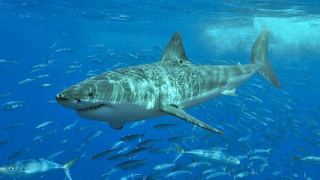

plusieurs espaces : du texte
inferieur : <
Retour a la ligne
bla bla
du GRAS texte
monter
Aller à la page 2
Lien| (0,0) | (0,1) |
|---|---|
| (1,0) | (1,1) |
| (1,0) | (1,1) |
| (0,0) | (0,1) |
|---|---|
| (1,0) | (1,1) |
| (1,0) | (1,1) |
| Un long texte oblige le navigateur à passer à la ligne. | vide |
| vide | Une grande cellule élargit toutes les autres sur sa ligne. |
| col 1 | col 2 |
|---|---|
| (0,0) | (0,1) |
| (1,0) | (1,1) |
Mais on n'échappe pas ainsi à la tragédie, la mort d'Hippolyte vient briser ce rêve, et vient rappeler qu'il n'est pas d'issue. D'autre part, le sentiment qui unit les jeunes gens vient contraster fortement avec la passion qu'éprouve Phèdre.